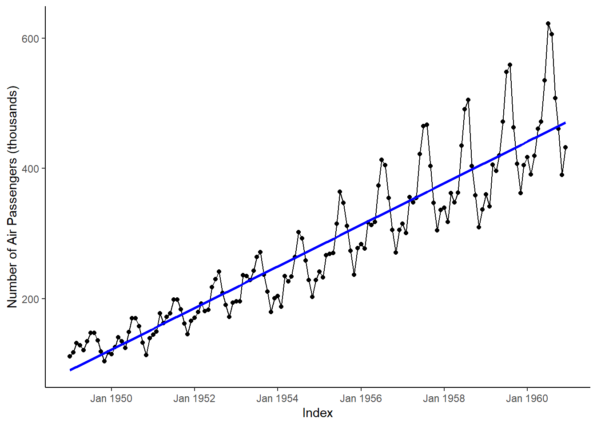
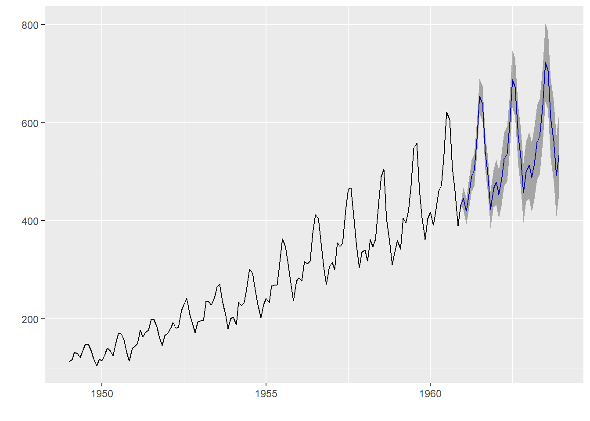

TIME SERIES
# Load needed packages
library(ggplot2)
library(readxl)
library(zoo)
library(xts)
library(tseries)
library(forecast)
library(ggfortify)# Read data
Day_5_Data <- read_excel("Day 5 Data.xlsx", sheet = "TS Data")# Combine separate Year and Month columns into single Date Column
Day_5_Data$Date <- as.yearmon(paste(Day_5_Data$year, Day_5_Data$month), "%Y %m")# Convert data to timeseries object
ts <- xts(Day_5_Data[,-c(2:4)], order.by=as.Date(Day_5_Data$Date,
format = "%Y %m"))Explore Timeseries
ggplot(ts, aes(x = Index, y =num )) +
geom_point()+
geom_line()+
scale_x_date(date_labels = "%b %Y",date_breaks = "2 year")+
scale_y_continuous(name="Number of Air Passengers (thousands)")+
geom_smooth(method = "lm", se = FALSE,color="blue")+
theme_classic()## `geom_smooth()` using formula 'y ~ x'
# Restructure time series object for futher analysis
ts_air <- ts(ts, start=c(1949,1), end=c(1960,12), frequency = 12)
ts_air## Jan Feb Mar Apr May Jun Jul Aug Sep Oct Nov Dec
## 1949 112 118 132 129 121 135 148 148 136 119 104 118
## 1950 115 126 141 135 125 149 170 170 158 133 114 140
## 1951 145 150 178 163 172 178 199 199 184 162 146 166
## 1952 171 180 193 181 183 218 230 242 209 191 172 194
## 1953 196 196 236 235 229 243 264 272 237 211 180 201
## 1954 204 188 235 227 234 264 302 293 259 229 203 229
## 1955 242 233 267 269 270 315 364 347 312 274 237 278
## 1956 284 277 317 313 318 374 413 405 355 306 271 306
## 1957 315 301 356 348 355 422 465 467 404 347 305 336
## 1958 340 318 362 348 363 435 491 505 404 359 310 337
## 1959 360 342 406 396 420 472 548 559 463 407 362 405
## 1960 417 391 419 461 472 535 622 606 508 461 390 432Decompose Timeseries
# Plot components of time series
decompose_ts <- decompose(ts_air, "multiplicative")
plot(decompose_ts)
Test Stationarity
# Use ADF test
# The null hypothesis H0 : that the time series is non stationary
# The alternative hypothesis HA : that the time series is stationary
adf.test(ts_air, alternative ="stationary", k=12)##
## Augmented Dickey-Fuller Test
##
## data: ts_air
## Dickey-Fuller = -1.5094, Lag order = 12, p-value = 0.7807
## alternative hypothesis: stationary# We accept the null hypothesis. From the above p-value, we conclude that the time series is non-stationary.Make Series Stationary
# 1.Remove unequal variance using log of time series
# 2.Address the trend componant, do this by taking difference
plot(diff(log(ts_air))) # Looks betterFind Optimal Parameters
# 1.a. Look at original autocorrelation graph
Acf(ts_air,plot=TRUE) # There is high autocorrelation# 1.b. Look at transformed autocorrelation graph
Acf(diff(log(ts_air))) #looks better# 2.a. Look at original partial autocorrelation graph
Pacf(ts_air) # 2.b. Look at the transformed partial autocorrelation graph
Pacf(diff(log(ts_air))) The ACF/PACF plot give us suggestions on what degree of parameters to utilize. If the ACF had a smooth, geometric decay and the PACF a cutoff at lag p, we would utilize a pure AR(p) model. Given that the ACF shows no pattern of a smooth decay and decays to insignificance after lag 1, we will build an MA(1) model to fit the data. We will choose d = 1 as our degree of differencing, evidenced by our earlier call of the diff function.
Build ARIMA Model
R, THANKFULLY, has an auto.arima function that determines the optimal parameters for our time series.
arimaAP <- auto.arima(ts_air)
arimaAP## Series: ts_air
## ARIMA(2,1,1)(0,1,0)[12]
##
## Coefficients:
## ar1 ar2 ma1
## 0.5960 0.2143 -0.9819
## s.e. 0.0888 0.0880 0.0292
##
## sigma^2 estimated as 132.3: log likelihood=-504.92
## AIC=1017.85 AICc=1018.17 BIC=1029.35The ARIMA(2,1,1)(0,1,0)[12] model parameters are lag 1 differencing (d), an autoregressive term of second lag (p) and a moving average model of order 1 (q). Then the seasonal model has an autoregressive term of first lag (D) at model period 12 units, in this case months.
# Look at model diagnostics
ggtsdiag(arimaAP)The residual plots appear to be centered around 0 as noise, with no pattern. the arima model is a fairly good fit.
Forecast
Finally we can plot a forecast of the time series using the forecast function.
# Forecast the next 36 months
forecastAP <- forecast(arimaAP, level = c(95), h = 36)
autoplot(forecastAP)